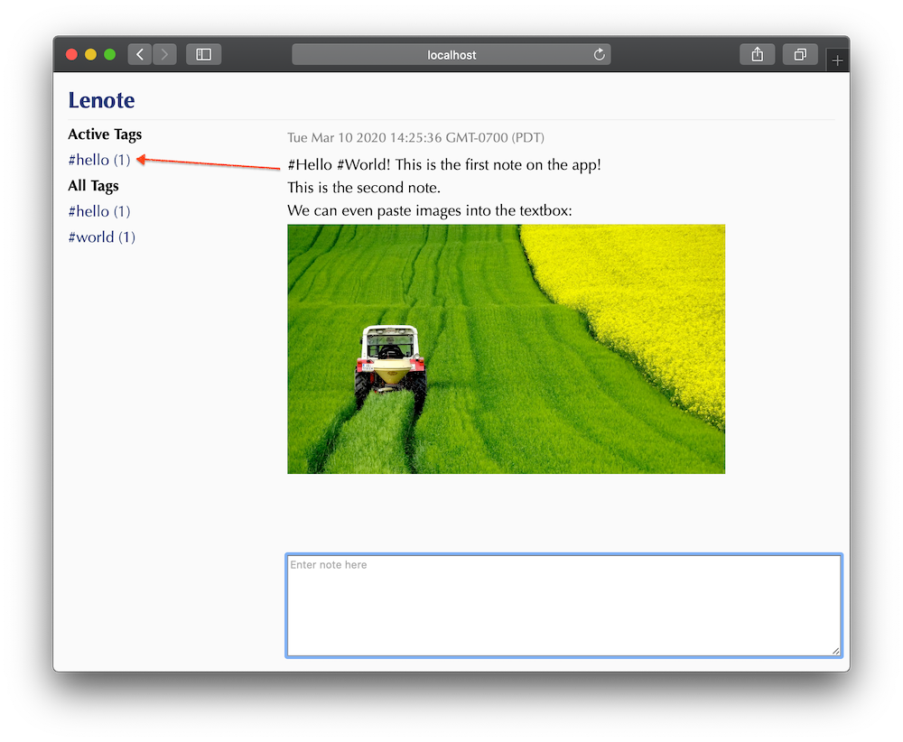
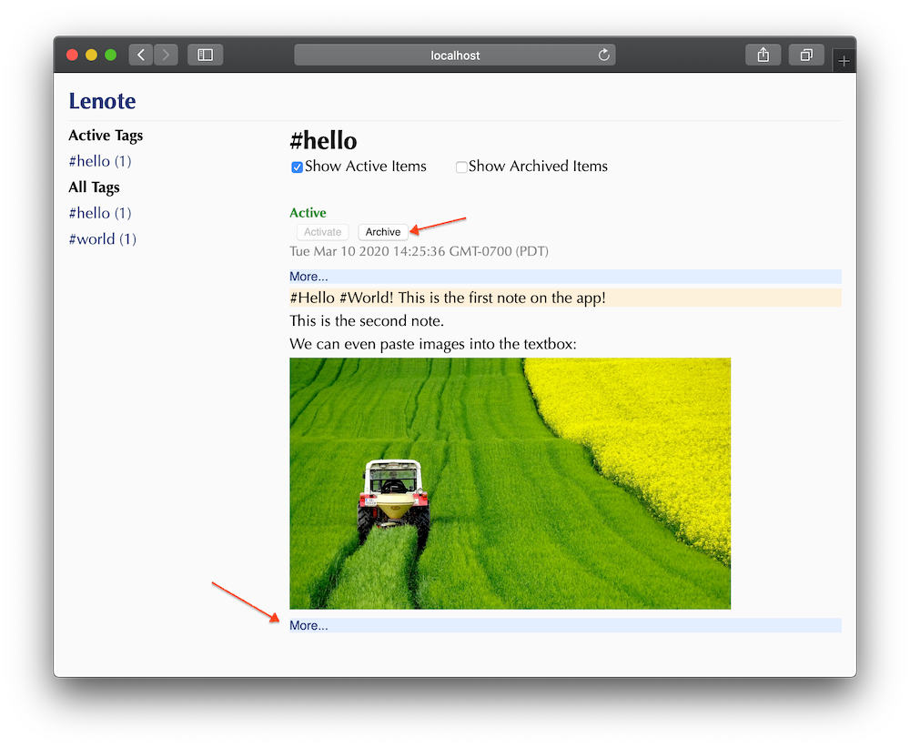

- Published on March 8, 2020
- Tags: rust, programming, wasm
In this blog post, I want to introduce the personal note taking app that I wrote for myself. I want to highlight the use-case that I'm looking to solve, as well as the challenges that I ran into with the tech stack and how I solved them.
As you might have read in the title, I used Actix and Yew to build this note taking app. I'm not going to do a complete walk-through/tutorial since they have pretty decent documentation & tutorials. Instead, I'll walk through the things that didn't quite work out of the box, which I had to find my own solutions for.
The use-case
The use-case for this note taking app is relatively simple. Since I'm not the most organized note-taker in the world, I want something that will just let me start typing, without having to think about which folder or category they should go into. In this sense, I'm heavily leveraging tags to put come back to these notes later.
As I enter each note, the app will detect the tags and index them appropriately. The advantage of this approach, for me, is to be able to have more than one tag or one category for each note, rather than having to make the conscious decision of where the note belongs when I just wanted to start typing:

Later, I can revisit each tag to follow up and archive them once I'm done. I can also look through the messages before or after the tag. This is especially useful for when I need to just continuously enter notes, without having to add a tag for each of them, or maybe adding the tag after the fact:

There are other features that I'm looking to add; for example: taking note to reply to a tag while working on the item, note searching, etc. That's for future me to work on.
The benefits of a webapp running locally
Coming into this project, the first decision I made was that this app will work locally. I don't need to access it across the internet. This freed me up to make technical choices that simplified the solution:
- Since the web server is localhost, I can somewhat abuse the number of round trips between the client and the server, without having to dig into handling data over websocket.
- Along that line, with a localhost server, I can afford for the payload to be big & optimized. For example, when you paste an image, it is uploaded as a base64 string inside a JSON field (see below).
- Since it's an app that runs locally on one machine, I decided to use Sqlite as data storage, greatly simplifying deployment.
If this sounds like a perfect fit for a desktop app, it is! However, the state of desktop UI in the Rust ecosystem isn't quite mature yet. The benefit of running it as a web app allows me to run it virtually any system with web browser, without the additional burden of managing installation of Qt or some other massive UI library.
The tech stack & development workflow
Project Setup
If you're unfamiliar with Yew, think of it as something like React or Angular, except that you write your components in Rust. This Rust code gets compiled down to WebAssembly, and you can run it in the browsers.
Since this WebAssembly runs in the browser, you get the Rust language and most of the standard library. The parts you don't get are the ones that require making syscalls, for example, accessing the file system, calling SystemTime::now() or the rand crate to generate random numbers. Luckily, we can interop with JavaScript for those operations (more on that later). This means we'll still need to break this app into two parts. Compiling from rust to WebAssembly requires either wasm-pack build or cargo web build and does not work with cargo build yet, these two parts also represent two different cargo projects:
- The Server: this produces a normal binary that runs outside the browser and can do anything we want: access the file system, accessing the Sqlite file, etc. This server part is responsible for the HTTP server that will serve the actual web pages, and the JavaScript and WebAssembly files to the browser. This is just a good old
cargo buildproject. - The Client: this produces the JavaScript and WebAssembly files that will be served to the browser. For this project, I chose
wasm-pack build.
Breaking the app into two separate projects introduces a bit of a complication. Namely, when building the two projects, the output each goes into their own target folder. There are fancy build.rs scripts out there that perform a bunch of magic. I just keep it simple and pass a command line argument into the server executable to indicate the folder from where it should serve the JavaScript and WebAssembly files.
Auto-reloading
Out of the box, Actix-Web supports auto-reloading. However, one thing I don't like about their current support is that it requires altering "production" code to add ListenFd into the listening stack. Moreover, I also want to automate building the client files as I make code changes–using similar commands.
I ended up using fswatch to watch for changes in each folder and run build commands for each. For the server side, I have to run an additional kill command in order to kill running server process.
Development challenges & solutions
You can find a mirror of the project source code at https://github.com/snluu/lenote-mirror.
For the most part, things work well out of the box with both Actix and Yew. There were a few kinks that I had to work through to get things working.
Switch from cargo-web to wasm-pack
When I started this project, Yew 0.12 was the latest supported version, all their documentation used cargo web–so I followed suit. There was one particular annoying thing with with cargo web: its build output generates a JavaScript file and a WebAssembly file that are tightly coupled, and this JavaScript file always tries to load the WebAssembly file from a path relative to the current URL. This means, when the app loads different pages at /app/main or /app/tag, it will try to load /app/main/lenote.wasm and /app/tag/lenote.wasm, even though they are the same file. This resulted in having to setup the server side with a bunch of different routes and redirection.
On the other hand, wasm-pack generate files that export an init function, allowing a bit more control over the path of the generated JS and WASM files. This allows me to pin the WASM for the URL file to start at the domain root:
Scroll to the bottom of the note viewer
One of the features I wanted was that the main canvas showing the notes would scroll to the bottom to display the newest note, as you type and hit enter to submit the note; similar to how your chat window would scroll to the bottom when sending a message.
The operation to scroll to the bottom itself is quite simple, just set the scrollTop value of the div to some really big number. One can do that using Yew's support for component reference and casting it to a web_sys or stdweb element. Though, this is something that didn't quite work out of the box with Yew due to its order of operation. I couldn't find any documentation, but basing on my experimentation, Yew would render the outer note container first (the div that we actually need to scroll), and then insert the DOM for the new note.
Due to that order of operation, setting scrollTop immediately would scroll to the bottom of the div, before the new DOM is in place. To work around this issue, one ought to send another message before returning true for "should re-render". This message will be put in a queue somewhere (presumably?) and will get called after the rendering of the new DOM completed. We can then set the scrollTop value in this step.
Paste images into the textarea
When taking note, I use a lot of screenshots. I wanted a convenient way to save and embed those images into my notes without the clunky process of saving a screenshot to file, select it to upload, etc. The screenshot utilities I use are all capable of storing it in the clipboard, so I wanted the ability to just paste the image into my note editor.
Even though you can't display photos in a TextArea element, the onPaste event of the TextArea can actually receive image data. Yew uses an html! Rust macro that allows you write HTML-ish code when rendering the view for a component. However, this is actual Rust code, not just any string; meaning someone has had to port these elements and attributes into Yew or web_sys before you can use it. At the time of implementation, the TextArea element supported some main events and allowed me to specify callbacks into Rust code, but I was only able to give onPaste a string, as if writing raw HTML. The handleInputPaste here is just a good old function that is callable from JavaScript. It will fire a callback when upon detecting an image from the from the ClipboardEvent. In order to get the callback working, the component also calls a JavaScript function to register the callback when mounted.
Initially, I wanted to implement this
handleInputPastefunction in Rust and export it as a JS function using wasm_bindgen. Though, neither Yew, web_sys, nor js_sys had support for theClipboardEventclass when I implemented the feature, so I just implemented it in JavaScript.
Summary
Overall, the development experience was quite pleasant with most things supported out of the box between Rust, wasm_bindgen, Yew, web_sys, js_sys, etc. I'm mainly a backend developer so I don't have a lot of prior experience for comparison, though I felt relatively productive throughout the project without having to spend a lot of time debugging and fighting undefined behaviors.
Through random reading on the interwebs, some benchmark showed that Yew might be slower compared to React, Ember, etc. in terms of raw performance. The only time I ran into performance issues was when I attempted to display 10,000 messages at once (30,000 DOM's?). The DOM-delta calculation took a second or two. That was a bit overkilled anyway and the performance issue went away when I dialed it back down to 500 messages.